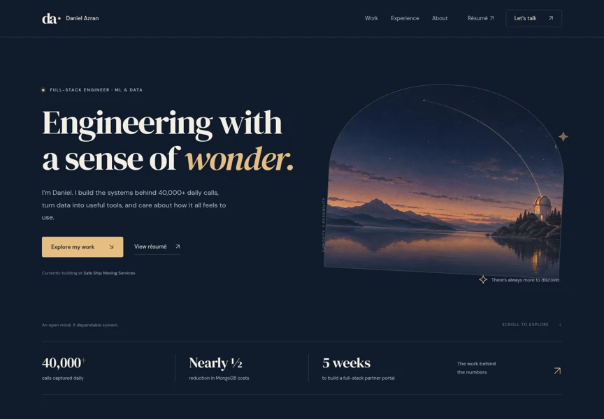
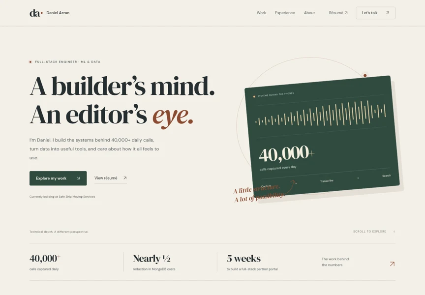
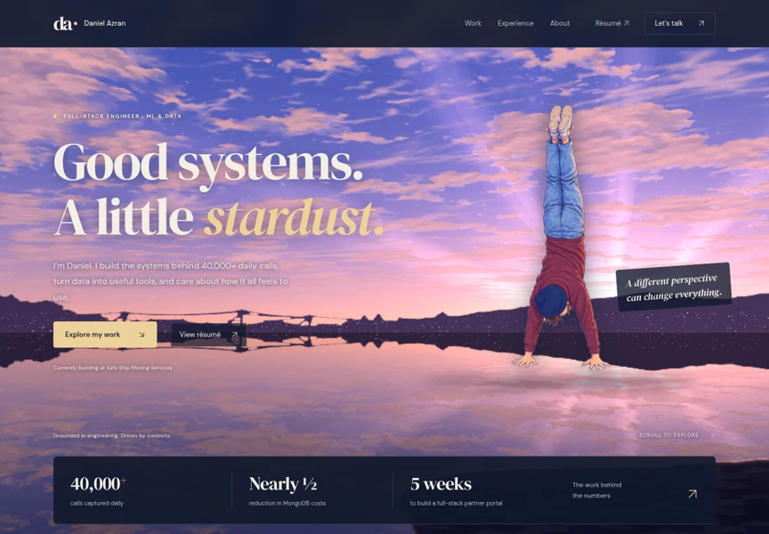

INITIAL DEFAULT
Observatory
Quietly atmospheric. An illustrated observatory, subtle stars, deep navy, and warm brass. A new hero without the handstand.
Explore ObservatoryDANIEL AZRAN / PORTFOLIO STUDIES / OCTOBER 2026
Three complete, working portfolios with the same grounded project stories. Explore the art direction, try the demos, and compare desktop and phone layouts.

Quietly atmospheric. An illustrated observatory, subtle stars, deep navy, and warm brass. A new hero without the handstand.
Explore Observatory
Warm paper, forest ink, and an engineer’s signal study. The clearest connection between your editing background and engineering work.
Explore Studio
Your living dusk-to-night sky and handstand, with calmer composition, a clearer introduction, and the same stronger project storytelling.
Explore SkylineThese are live pages. Scroll, open the menu, and try the project demos.
A clearer introduction, prominent résumé access, a real mobile menu, a dedicated Safe Ship case study, a more honest golf study, useful interactive demos, reduced-motion support, and direct email contact.
The previous design is still available as v12 Sky. These variants are branch-local review candidates. Observatory was the initial default; the visual direction is under revision. Nothing has been deployed.